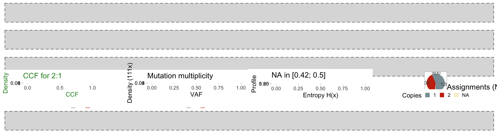
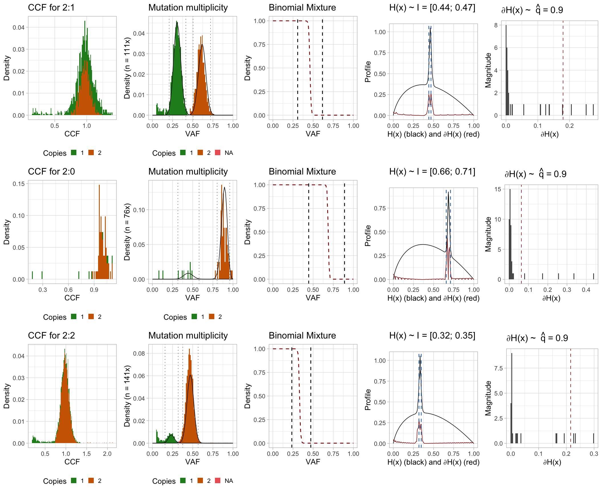
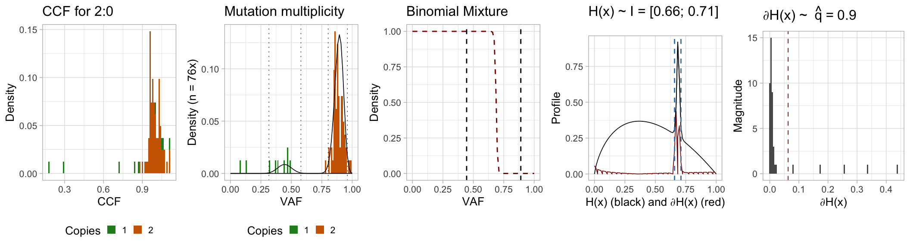
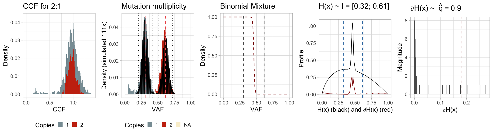

library(CNAqc)
#> [ CNAqc - Copy Number Alteration quality check ]
#> Author : Giulio Caravagna <gcaravagn@gmail.com>
#> GitHub : caravagn/CNAqcMutation multiplicity
To compute Cancer Cell Fractions (CCFs), CNAqc first computes the mutation multiplicity (the numbe of copies of a mutation in a certain copy number segment). This is generally a difficult task, and wrong CCF estimates in turn propagate errors in other analyses. For this reason, CNAqc limits this computations to karyotypes that are usually “easier” - '2:1', '2:0' and '2:2' - where a mutation is either present in one or two copies, assuming that the aneuploidy state is directly achieved from a diploid genome.By design, computations on other karyotypes raise an error.
Expected VAF. Given the mutations that are mapped to a certain karyotype (e.g., 2:1), the expected Variant Allele Frequency (VAF) for mutations in \(m\) copies, with tumour purity \(\pi\) and segment ploidy \(p\) (number of copies of the minor and major allele) are given by \[
v = \dfrac{m \pi}{
2 (1 - \pi) + \pi p
} \, .
\] This formula is also used to determine the expected peaks in the peak-detection algorithm used to QC copy number calls in CNAqc (see the vignette “QC analysis via peaks detection”).
In this task we need to determine the value of \(m\) from the observed \(v\) and the karyotype.
2-class mixture. CNAqc uses a heuristic based on the fact that we expect two Binomial distributions for the mutations happening before and after aneuploudy. The density of these Binomial distributions are:
- peaked at \(v_1\) for \(m = 1\) (after aneuploidy) and \(v_2\) for \(m = 2\) (before aneuploidy).
- computed on the domain \([0, 1]\), after translating the read counts into allele frequencies. This is achieved fixing the number of trials of the Binomial process to the median coverage \(n\) of the mutations that map to the segments under investigation (e.g., the triploid segments);
Therefore, the assumptions in CNAqc are that overdispersion of coverage is small to justify a Binomial instead of a Beta-Binomial model, and that trials are well-represented with the median coverage.
CNAqc computes two Binomial densities \(\text{Bin}_1\) and \(\text{Bin}_2\) over the set of values \([0; n]\) with \(n\) number of trials and success probability \(v_i\), i.e. \[
\text{Bin}_i = p(s \mid n; v_i)
\] as the probability of finding \(s\) reads with the mutant allele at out of \(n\) (median depth), assuming the mutation expected frequency is \(v_i\).
To finalize the densities of this mixed model is however required to determine the absolute proportions of the mixture; this quantity must be indeed used to actually scale the two theoretical densities. To do this CNAqc uses a simple heuristic that counts how many mutations map below the area of each of those densities. The heuristics computes the 1% and 99% quantiles of those distributions, determing two ranges \(I_1 = [v_1^1; v_1^{99}]\) and \(I_2 = [v_2^1; v_2^{99}]\) so that:
- \(n_1\) are the number of mutations with VAF in \(I_1\);
- \(n_2\) are the number of mutations with VAF in \(I_2\);
Notice that these two intervals might overlap (i.e., it could be that \(v_1^{99} > v_2^{1}\)). This is however not a problem because the two numbers are normalized to create a complete 2-components Binomial mixture model. \[ M = \mu_1 * \text{Bin}_1 + (1 - \mu_1) * \text{Bin}_2 \] where \(\mu_1 = n_1/(n_1+n_2)\) are the normalized proportions.
Entropy-based assignments. Assigning mutation multiplicities is particularly difficult at the crossing of the two Binomial densities, because in that case some mutations that have true multiplicity \(m=1\) are actually mapped to \(m=2\), and viceversa. This creates false “bumps” in the CCF distribution, which could be interepreted either as miscalled copy-number segments or false clonal architectures. CNAqc uses a entropy-based heuristic to determine which mutations can be confidently assigned to one of the two states of \(m\), and the heuristic is controlled by a user-defined parameter that represents a quantile. Plots are returned to visually aid the user to determine the best value for the input parameter.
The difficult mutations to assign are those laying in between \(v_1\) and \(v_2\). It is reasonable to assume that mutations with VFA below \(v_1\) are in one copy, and that those above \(v_2\) are in two copies. This implicitely assume that we are working with clonal copy number calls, a simplyfying assumption of this analysis in CNAqc.
CNAqc uses the entropy \(H(x)\) of the latent variables to determine mutation multiplicities, as well as its numerical derivative \(\partial_x H\) evaluated in the domain \([nv_1, nv_2]\). Both quantities are computed from the template mixture \(M\). The derivative is the quantity that grows when the uncertainty of the assignments is higher. By definitiion this oscillates around low values in the leftmost and rightmost part of the evaluated spectrum, and peaks higher at the centre of the crossing of the two densities.
To determine which values of the derivatives are large to suggest uncertainty, the binned values of \(\partial_x H\) are used to determine the quantile \(\hat{q}\) (by default, the 90%); because we expect most values to be confidently assigneable, the quantile is the determinant of the cutoff for the assignment. In fact, values below this quantile represent areas of the frequency spectrum where the assignments are confident towards either one of the two mixture components. Values above the quantile are the areas where we are not confident in the assignment.
Therefore, define from the range \([nv_1, nv_2]\) the points:
- \(nv_1 \leq \hat{w}_1 < nv_2\) so that \(\hat{w}_1 = \min_{x}\{\partial_x H(x) > \hat{q}\}\);
- \(nv_1 < \hat{w}_2 \leq nv_2\) so that \(\hat{w}_2 = \max_{x}\{\partial_x H(x) > \hat{q}\}\).
Then:
- any mutation in the range \([nv_1, n\hat{w}_1]\) is considered having one mutation copy;
- any mutation in the range \([n\hat{w}_2, nv_2]\) is considered having two mutation copies;
- any mutation in the range \([n\hat{w}_1, n\hat{w}_2]\) is considered “Not Assignable” with confidence.
When CNAqc computes this heuristic it returns a plot of the entropy and marks the ranges \([n\hat{w}_1, n\hat{w}_2]\) determined by the quantile \(\hat{q}\), so that if the user sees that the quantile selected are too stringent or loose, the input parmeter can be adjusted accordingly.
Example computation
We work with the same object shown in CNAqc’s Introductory Vignette.
# Dataset available with the package -- see Getting Started.
print(x)
#> CNAqc n = 13141 mutations for 267 CNA segments (267 clonal, 0 subclonal)
#> Purity 89% cellularity
#> Karyotypes 7478 (2:2); 1893 (4:2); 1625 (3:2); 1563 (2:1); 312 (3:0); 81 (2:0); 4 (16:2); 2 (25:2); 2 (3:1); 1 (106:1); 1 (26:2); 1 (99:1)
#>
#> Peaks QC FALSE
#> CCF FALSEWe run function compute_CCF to obtain the full analysis of CCF values, first with the default parameters.
x_default = compute_CCF(x)
#>
#> =-=-=-=-=-=-=-=-=-=-=-=-=-=-=-=-=-=-=-=-=-=-=-=-=-=-
#> Computing mutation multiplicity with entropy H(x)
#> =-=-=-=-=-=-=-=-=-=-=-=-=-=-=-=-=-=-=-=-=-=-=-=-=-=-
#> Binomial peaks
#> # A tibble: 2 x 4
#> mutation_multiplicity karyotype peak label
#> <dbl> <chr> <dbl> <chr>
#> 1 1 2:1 0.308 One copy
#> 2 2 2:1 0.616 Two copies
#> H(x) quantile 0.9
#> Median depth 111
#> Mixing proportions ([1, 99] quantiles): 0.554109589041096 0.445890410958904
#> H(x)-derived cutoffs 0.441441441441441 0.468468468468468
#> Warning in FUN(X[[i]], ...): NAs introduced by coercion
#> Warning: Removed 2 rows containing non-finite values (stat_bin).
#> Warning: Removed 6 rows containing missing values (geom_bar).
#> Warning: Removed 2 rows containing missing values (geom_bar).
#>
#> =-=-=-=-=-=-=-=-=-=-=-=-=-=-=-=-=-=-=-=-=-=-=-=-=-=-
#> Computing mutation multiplicity with entropy H(x)
#> =-=-=-=-=-=-=-=-=-=-=-=-=-=-=-=-=-=-=-=-=-=-=-=-=-=-
#> Binomial peaks
#> # A tibble: 2 x 4
#> mutation_multiplicity karyotype peak label
#> <dbl> <chr> <dbl> <chr>
#> 1 1 2:0 0.445 One copy
#> 2 2 2:0 0.89 Two copies
#> H(x) quantile 0.9
#> Median depth 76
#> Mixing proportions ([1, 99] quantiles): 0.0933333333333333 0.906666666666667
#> H(x)-derived cutoffs 0.657894736842105 0.710526315789474
#> Warning: Removed 4 rows containing missing values (geom_bar).
#> Warning: Removed 2 rows containing missing values (geom_bar).
#>
#> =-=-=-=-=-=-=-=-=-=-=-=-=-=-=-=-=-=-=-=-=-=-=-=-=-=-
#> Computing mutation multiplicity with entropy H(x)
#> =-=-=-=-=-=-=-=-=-=-=-=-=-=-=-=-=-=-=-=-=-=-=-=-=-=-
#> Binomial peaks
#> # A tibble: 2 x 4
#> mutation_multiplicity karyotype peak label
#> <dbl> <chr> <dbl> <chr>
#> 1 1 2:2 0.235 One copy
#> 2 2 2:2 0.471 Two copies
#> H(x) quantile 0.9
#> Median depth 141
#> Mixing proportions ([1, 99] quantiles): 0.0946892325649256 0.905310767435074
#> H(x)-derived cutoffs 0.319148936170213 0.347517730496454
#> Warning in FUN(X[[i]], ...): NAs introduced by coercion
#> Warning: Removed 38 rows containing non-finite values (stat_bin).
#> Warning: Removed 6 rows containing missing values (geom_bar).
#> Warning: Removed 2 rows containing missing values (geom_bar).
#>
#> =-=-=-=-=-=-=-=-=-=-=-=-=-
#> Summary CCF assignments
#> =-=-=-=-=-=-=-=-=-=-=-=-=-
#> # A tibble: 8 x 3
#> karyotype mutation_multiplicity assignments
#> <chr> <dbl> <int>
#> 1 2:0 1 9
#> 2 2:0 2 72
#> 3 2:1 1 886
#> 4 2:1 2 675
#> 5 2:1 NA 2
#> 6 2:2 1 1013
#> 7 2:2 2 6427
#> 8 2:2 NA 38
#> Note: NA ~ mutations not confidently assignable at q = 0.9
# Print new object
print(x_default)
#> CNAqc n = 13141 mutations for 267 CNA segments (267 clonal, 0 subclonal)
#> Purity 89% cellularity
#> Karyotypes 7478 (2:2); 1893 (4:2); 1625 (3:2); 1563 (2:1); 312 (3:0); 81 (2:0); 4 (16:2); 2 (25:2); 2 (3:1); 1 (106:1); 1 (26:2); 1 (99:1)
#>
#> Peaks QC FALSE
#> CCF TRUE ~ 2:1, 2:0, 2:2We can visually inspect the CCF estimates for the default karyotypes ('2:1', '2:0' and '2:2'). We can do that accessing the field CCF_estimates which contains a plot reporting the result of the analysis.
# Result for karyptype '2:1' (triploid)
print(x_default$CCF_estimates$`2:1`)
#> $mutations
#> # A tibble: 1,563 x 15
#> chr from to ref alt FILTER DP NV VAF
#> <chr> <dbl> <dbl> <chr> <chr> <chr> <dbl> <dbl> <dbl>
#> 1 chr2 3.58e5 3.58e5 C A PASS 104 58 0.558
#> 2 chr2 9.09e5 9.09e5 A G PASS 15 7 0.467
#> 3 chr2 1.04e6 1.04e6 C T PASS 93 57 0.613
#> 4 chr2 1.33e6 1.33e6 A T PASS 104 55 0.529
#> 5 chr2 1.52e6 1.52e6 C T PASS 90 50 0.556
#> 6 chr2 2.20e6 2.20e6 G T PASS 125 42 0.336
#> 7 chr2 2.90e6 2.90e6 C T PASS 109 58 0.532
#> 8 chr2 3.13e6 3.13e6 A G PASS 134 35 0.261
#> 9 chr2 3.83e6 3.83e6 A T PASS 120 68 0.567
#> 10 chr2 3.88e6 3.88e6 T A PASS 126 10 0.0794
#> # … with 1,553 more rows, and 6 more variables: ANNOVAR_FUNCTION <chr>,
#> # GENE <chr>, karyotype <chr>, segment_id <chr>,
#> # mutation_multiplicity <dbl>, CCF <dbl>
#>
#> $plot The plot shows all the quantities described above; in this case we see for instance that \(\hat{q} = 0.9\) (default value) is a little bit off the required value, because the determined range \(I\) is not fully including the peak in the entropy values. However, we see that beacuse the data quality is high the two Binomial distributions are well separated; Therefore even with this parameter value we still obtain perfectly reasonable mutation multiplicities and CCF estimates.
We inspect also the remaining karyotypes, and find a similar satisfactory result.
# Result for karyptype '2:2' (tetraploid)
print(x_default$CCF_estimates$`2:2`)
#> $mutations
#> # A tibble: 7,478 x 15
#> chr from to ref alt FILTER DP NV VAF
#> <chr> <dbl> <dbl> <chr> <chr> <chr> <dbl> <dbl> <dbl>
#> 1 chr4 5.49e4 5.49e4 C A PASS 718 44 0.0613
#> 2 chr4 5.74e5 5.74e5 G C PASS 164 16 0.0976
#> 3 chr4 1.11e6 1.11e6 G A PASS 157 66 0.420
#> 4 chr4 1.40e6 1.40e6 C T PASS 178 93 0.522
#> 5 chr4 1.54e6 1.54e6 G A PASS 155 68 0.439
#> 6 chr4 1.57e6 1.57e6 C T PASS 172 77 0.448
#> 7 chr4 1.60e6 1.60e6 G A PASS 139 61 0.439
#> 8 chr4 1.80e6 1.80e6 G A PASS 161 79 0.491
#> 9 chr4 2.29e6 2.29e6 C T PASS 168 74 0.440
#> 10 chr4 2.36e6 2.36e6 T G PASS 100 6 0.06
#> # … with 7,468 more rows, and 6 more variables: ANNOVAR_FUNCTION <chr>,
#> # GENE <chr>, karyotype <chr>, segment_id <chr>,
#> # mutation_multiplicity <dbl>, CCF <dbl>
#>
#> $plot
# Result for karyptype '2:0' (tetraploid)
print(x_default$CCF_estimates$`2:0`)
#> $mutations
#> # A tibble: 81 x 15
#> chr from to ref alt FILTER DP NV VAF
#> <chr> <dbl> <dbl> <chr> <chr> <chr> <dbl> <dbl> <dbl>
#> 1 chr12 5.21e7 5.21e7 A C PASS 75 6 0.08
#> 2 chr12 5.25e7 5.25e7 G A PASS 60 53 0.883
#> 3 chr12 5.34e7 5.34e7 C T PASS 82 75 0.915
#> 4 chr12 5.48e7 5.48e7 C T PASS 86 77 0.895
#> 5 chr12 5.48e7 5.48e7 A T PASS 72 62 0.861
#> 6 chr12 5.54e7 5.54e7 T A PASS 85 40 0.471
#> 7 chr12 5.78e7 5.78e7 C T PASS 73 62 0.849
#> 8 chr12 5.86e7 5.86e7 C T PASS 65 51 0.785
#> 9 chr12 5.86e7 5.86e7 T A PASS 64 57 0.891
#> 10 chr12 5.90e7 5.90e7 G A PASS 54 44 0.815
#> # … with 71 more rows, and 6 more variables: ANNOVAR_FUNCTION <chr>,
#> # GENE <chr>, karyotype <chr>, segment_id <chr>,
#> # mutation_multiplicity <dbl>, CCF <dbl>
#>
#> $plot
Just for example, this is how CCF values would have changed if we had used different value of \(\hat{q}\).
# Bad estimates for q = .5
print(examples_low$CCF_estimates)
#> $`2:1`
#> $`2:1`$mutations
#> # A tibble: 1,563 x 15
#> chr from to ref alt FILTER DP NV VAF
#> <chr> <dbl> <dbl> <chr> <chr> <chr> <dbl> <dbl> <dbl>
#> 1 chr2 3.58e5 3.58e5 C A PASS 104 58 0.558
#> 2 chr2 9.09e5 9.09e5 A G PASS 15 7 0.467
#> 3 chr2 1.04e6 1.04e6 C T PASS 93 57 0.613
#> 4 chr2 1.33e6 1.33e6 A T PASS 104 55 0.529
#> 5 chr2 1.52e6 1.52e6 C T PASS 90 50 0.556
#> 6 chr2 2.20e6 2.20e6 G T PASS 125 42 0.336
#> 7 chr2 2.90e6 2.90e6 C T PASS 109 58 0.532
#> 8 chr2 3.13e6 3.13e6 A G PASS 134 35 0.261
#> 9 chr2 3.83e6 3.83e6 A T PASS 120 68 0.567
#> 10 chr2 3.88e6 3.88e6 T A PASS 126 10 0.0794
#> # … with 1,553 more rows, and 6 more variables: ANNOVAR_FUNCTION <chr>,
#> # GENE <chr>, karyotype <chr>, segment_id <chr>,
#> # mutation_multiplicity <dbl>, CCF <dbl>
#>
#> $`2:1`$plot
# Still good estimates for q = .9
print(examples_high$CCF_estimates)
#> $`2:1`
#> $`2:1`$mutations
#> # A tibble: 1,563 x 15
#> chr from to ref alt FILTER DP NV VAF
#> <chr> <dbl> <dbl> <chr> <chr> <chr> <dbl> <dbl> <dbl>
#> 1 chr2 3.58e5 3.58e5 C A PASS 104 58 0.558
#> 2 chr2 9.09e5 9.09e5 A G PASS 15 7 0.467
#> 3 chr2 1.04e6 1.04e6 C T PASS 93 57 0.613
#> 4 chr2 1.33e6 1.33e6 A T PASS 104 55 0.529
#> 5 chr2 1.52e6 1.52e6 C T PASS 90 50 0.556
#> 6 chr2 2.20e6 2.20e6 G T PASS 125 42 0.336
#> 7 chr2 2.90e6 2.90e6 C T PASS 109 58 0.532
#> 8 chr2 3.13e6 3.13e6 A G PASS 134 35 0.261
#> 9 chr2 3.83e6 3.83e6 A T PASS 120 68 0.567
#> 10 chr2 3.88e6 3.88e6 T A PASS 126 10 0.0794
#> # … with 1,553 more rows, and 6 more variables: ANNOVAR_FUNCTION <chr>,
#> # GENE <chr>, karyotype <chr>, segment_id <chr>,
#> # mutation_multiplicity <dbl>, CCF <dbl>
#>
#> $`2:1`$plot